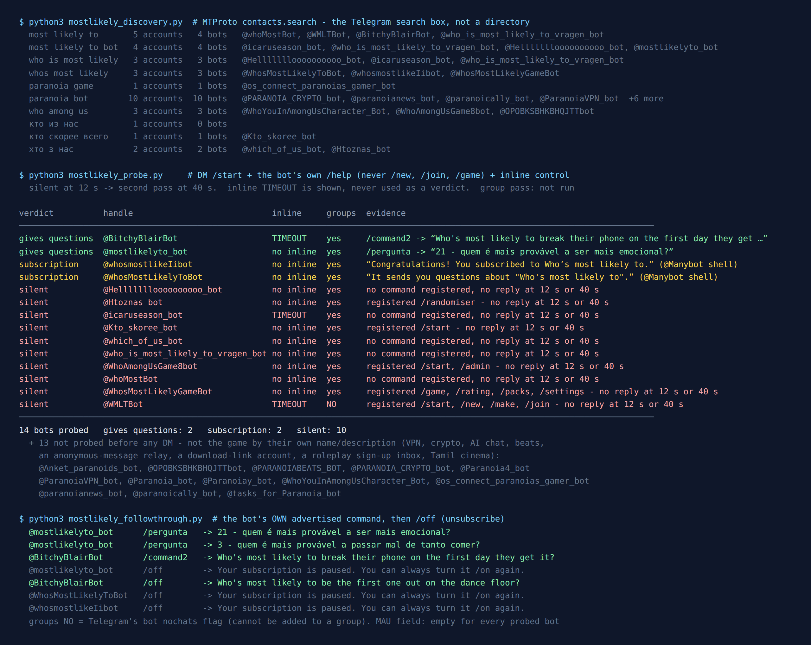

Telegram “Most Likely To” Bots: 27 Found, 2 Give You a Question
“Who’s most likely to…” is the easiest party game there is. Someone reads a line, everyone points at a person, and the group laughs at whoever collected the most fingers. There are no cards, no board and no scores. Its darker cousin, Paranoia, is almost as simple: you whisper a question to the person next to you, they answer out loud with a name, and a coin decides whether anyone else gets to hear the question.
Both are games about pointing at people, which makes them awkward to move into a group chat. In a room, a hundred fingers go up at once. In a chat, whoever types first sets the answer and everyone else just piles on. So before recommending a bot for either game, I wanted to know two things: which bots exist right now, and whether any of them actually solves the voting.
On the evening of 28 September 2026 I asked Telegram’s own search, messaged every bot that looked like the real game, and wrote down what came back. 27 bots came back. 13 were plainly something else and I never messaged them. Of the 14 I did message, 10 stayed silent at twelve seconds and again at forty, 2 were empty subscription lists, and 2 handed me an actual question. Neither of those two runs a vote. And not one of the ten bots Telegram returns for “paranoia bot” is the game.

How the list was built
Bot directories keep a listing alive long after the server behind it has gone, so this list came from the platform instead. The Telegram search box calls an API method named contacts.search, and it only returns accounts that exist right now. I ran ten queries, written down before anything was measured: most likely to, most likely to bot, who is most likely, whos most likely, paranoia game, paranoia bot, who among us, and the Russian and Ukrainian names people actually type: кто из нас, кто скорее всего and хто з нас.
That produced 27 distinct bot accounts. Before sending a single message I set aside the 13 that were plainly not the game by their own name or description, and wrote the reason next to each one. Then every remaining bot got /start, its own help command if it had registered one, and an inline query as a liveness check. Inline queries are useful here because Telegram forwards them to the bot’s server and waits: a live server answers, and a switched-off one times out. Anything silent at twelve seconds got a second chance at forty.
I never sent /new, /join, /game or anything that creates a game or writes into a shared list. The only extra commands came later, and only the ones a bot itself told me to use.
Paranoia: ten bots by name, none of them the game
This is the shortest section, and it is the finding I did not expect. The query paranoia bot returns ten accounts. Going by their own names and descriptions, they are: a VPN service, a crypto bot, a music-beats account, a news-style channel bot, an AI chat bot with “no 18+ filters” that has moved to another handle, someone’s personal task-approval bot, a roleplay project’s sign-up inbox, an anonymous-message relay addressed to one named person, an account whose display name is “صراحه” (the name of an anonymous honesty-message app), and one called “Zapan-go” with no description at all. paranoia game adds exactly one more: an account about Tamil comedy films.
Zero Paranoia game bots. Telegram’s search is not the whole of Telegram, and a bot with an unrelated name could still play it. But if you type the name of the game into the search box, which is what people actually do, you will not find one.
That is less of a problem than it sounds, because Paranoia is one of the few party games a chat can run better than a room. More on that below.
Most Likely To: 10 of 14 said nothing
10 bots gave no reply at twelve seconds or at forty. The silent list includes every bot that looked like a real game from the outside:
@WMLTBot(“Who’s Most Likely To…?”) is the only bot in the set built like a proper multiplayer game. It has registered/new,/make,/join,/settingsand/language, and a description that invites you to “jump into our WMLT game”. It said nothing, and its inline query timed out as well. It also carries Telegram’sbot_nochatsflag, which means it cannot be added to a group at all. So whenever it did run, it could only have run through private chats.@WhosMostLikelyGameBotdescribes itself, in Russian, as “an anonymous game for companies: gather your friends, vote and find out who is who”, with commands for question packs, a rating and adding your own questions. That is exactly the vote the game needs. It was silent at both passes.@Kto_skoree_botpromises “a game with 40 questions for a group: enter the number of players and their names”. Silent.- Both Ukrainian “Хто з нас?” bots,
@Htoznas_botand@which_of_us_bot, silent, including after/randomiser, the one command@Htoznas_botregistered. @whoMostBot, whose description (“Questions like ‘Who among us lies more often?’ — players vote”) is the best one-line summary of the game in the whole set. Silent.
Silence is a reading, not a death certificate. A bot can be down for an evening. But the pattern is familiar from the earlier censuses on this site: the accounts with the best names and the longest command lists have often been the ones that had gone quiet.
Want a game that is definitely switched on?
The free Party Game runs inside Telegram itself, with nothing to add to your group and nothing reading the chat: Would You Rather, Never Have I Ever, Truth or Dare and quiz rounds, from two players up. It doesn’t have a Most Likely To mode, and I’d rather say that here than have you find out.
Open the Party Game No Telegram? It runs in a browser too: charliemorrison.dev/party-gameThe four that answered are all the same kind of bot
All four replies ended with the same footer: “Want to create your own bot? Go to @Manybot.” Manybot is a no-code builder that makes subscription bots. Press Start and you are added to a list, and the owner can broadcast to everyone on it. The same pattern showed up in the Never Have I Ever census, where two of the best game handles were subscription lists with nobody writing to them.
Two of the four are exactly that: @whosmostlikeIibot (“Congratulations! You subscribed to Who’s most likely to.”) and @WhosMostLikelyToBot (“It sends you questions about ‘Who’s most likely to’.”). Neither had registered any command that returns a question, and nothing arrived while I was watching. I sent /off to both and they confirmed the subscription was paused.
The other two do give you questions, if you know how to ask:
@BitchyBlairBotregistered one command with BotFather,/command2. Send it and you get a question: “Who’s most likely to break their phone on the first day they get it?” The odd part came next. When I sent/offto unsubscribe, it replied with another question (“…to be the first one out on the dance floor?”), and it did the same on a second try. On this bot, every message you send gets a question back, including the one meant to make it stop. Its inline mode is switched on but timed out, so it only works in a private chat.@mostlikelyto_botis in Portuguese. Its welcome says it was made for a roleplay community (“rpbr”) to make their evenings more fun, holds about 65 questions, and tells you to send/pergunta. I did, twice, and got question 21 (“who is most likely to be the most emotional?”) and then question 3 (“…to get sick from eating too much?”), so the order is shuffled./offpaused it properly.
So the honest summary is: on 28 September 2026, the working English Most Likely To bot on Telegram’s search is a question dispenser in a private chat. It gives the reader a line to paste into the group. It doesn’t count votes, doesn’t know who is in your group, and can’t hide who pointed at whom. The part of the game that is hard in a chat is still yours to solve.
Neither game needs a bot
This is the part I would actually use. Telegram already has everything both games need, and none of it is a bot.
Most Likely To: a poll with your friends’ names
Telegram polls come in two kinds. When Telegram added visible votes in 2020, its announcement put the difference simply: public polls “allow everyone in the group to see who voted for what”, and you “can still create anonymous polls to make sure nobody finds out” how you voted. For Most Likely To, the anonymous kind is the game. Everyone votes at the same time, nobody sees anyone else’s choice before voting, and the result lands on one person all at once. That is closer to a room full of pointing fingers than any bot in this census.
- Post the question as the poll question: “Who’s most likely to fall asleep at their own party?”
- Make one option per person in the group, names or @usernames.
- Leave “Anonymous voting” on. Switch it off only for a round where finding out who voted for whom is the whole joke.
- When everyone has voted, the winner reads the next question.
There is one hard limit, and I measured it rather than guessing. When I tested Telegram’s poll limits in August, a poll with twelve options went through and the thirteenth was refused (“poll can’t have more than 12 options”). That was through the Bot API’s sendPoll, and the protocol’s poll documentation describes the same object the apps use. In practice that makes Most Likely To a game for up to twelve players. A bigger group splits into two polls, or plays “most likely to” on a shortlist of the usual suspects, which is funnier anyway.
Paranoia: a private message and a die
Paranoia needs three things: a whisper nobody else hears, an answer everyone hears, and a fair coin. A group chat has all three.
- The asker sends the question to the next player in a private message: “Who here would be the worst person to be stuck in a lift with?”
- That player answers in the group, with a name and nothing else.
- Then they send 🎲 on its own in the group. 1, 2 or 3: the question stays secret. 4, 5 or 6: the asker posts it.
The die is the clever bit. It is not an emoji your phone animates for fun. Telegram’s protocol defines it as a dice media type whose value comes back from Telegram’s server, so everyone in the chat sees the same roll and nobody can pick their own result. I checked whether it is fair when I threw 900 Telegram emoji dice: the 🎲 die came out 49 low and 51 high in 100 throws, and all six emoji games were statistically indistinguishable from a fair draw. It is a better coin than the one in your pocket, because the whole group watches the same flip.
Two house rules make it work in a chat. The answer has to be a single name, typed before the roll, so nobody can take it back after seeing the die. And the asker must post the question word for word on a 4–6. Paraphrasing a mean question into a nice one ruins the game.
Out of questions by round five?
The Telegram Party Pack has 30 Most Likely To questions and 25 Paranoia questions, written for a group chat, next to 45 Never Have I Ever statements, 30 Would You Rather dilemmas and 110 Truth or Dare prompts. That is 255 in total, as copy-paste text and ready-made poll blocks, with a host guide. No bot involved.
Get the pack — $9.99 Or see how to run a game night in Telegram without any pack.What I could not test
No group pass. Telegram does not let the account I test from create groups, and I don’t borrow strangers’ groups to test bots in. Everything here comes from private chats and from the flags on each bot’s own account. For Most Likely To that matters less than usual, because none of the bots that answered offered a group mode anyway.
One evening, ten queries. Telegram’s search returns at most fifty accounts per query and ranks them its own way. A working bot with an unrelated name would not show up here. This is what a person finds by typing the game’s name, not a complete list of every bot on Telegram.
Silent is not dead. 10 bots said nothing twice. Some of them may be back next week. The date at the top of this page matters more than the list.
If you just want to play tonight
- Most Likely To, up to twelve players: an anonymous poll with everyone’s names. No bot.
- Paranoia: a private message, an answer in the group, and 🎲 to decide. No bot.
- Want a stream of English questions to read out?
@BitchyBlairBotin a private chat,/command2for each new one. Just know that it will keep answering every message you send. - A bigger group, or a mixed evening? The party games list covers games that hold up in a bigger group, and the two-player list covers the other end.
The game itself is older than any app: it is the yearbook superlative (“most likely to succeed”) turned into a party round, and the grammar of the superlative is the whole joke. The bots come and go. The poll button stays.